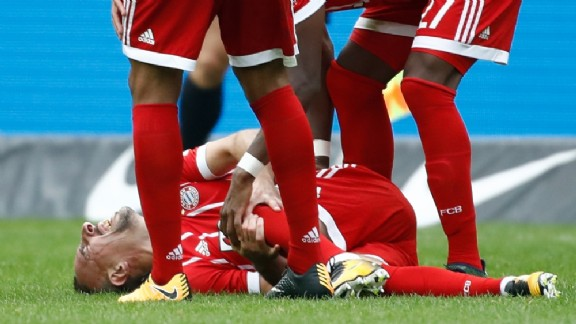

Carlo Ancelotti is niet langer de trainer van Bayern München. Wat zich eerder al aankondigde, werd vanmiddag officieel: de 58-jarige Italiaan vertrekt na iets meer dan één seizoen bij Der Rekordmeister. Zijn taken worden voorlopig waargenomen door assistent Willy Sagnol. Lees meer.
Legende Jupp Heynckes keert terug!
Jupp Heynckes wordt de opvolger van de vorige week ontslagen Carlo Ancelotti bij Bayern München. Dat meldt de doorgaans goed geïnformeerde krant Bild. Lees meer.
Franck Ribéry geblesseerd, speelt dit jaar niet meer.

Franck Ribéry kan een streep zetten door de rest van het kalenderjaar. De 34-jarige aanvaller heeft in het duel met Hertha BSC (2-2) zijn buitenste knieband afgescheurd en moet twee tot drie maanden revalideren, zo heeft hij laten weten aan Sky. Lees meer.
Alaba weer terug op het veld
Bayern München kan tijdens de krachtmeting met Paris Saint-Germain in de Champions League mogelijk weer beschikken over David Alaba. De Oostenrijkse verdediger sloot zaterdag op het trainingsveld aan bij de selectie van trainer Carlo Ancelotti. Alaba had begin deze maand bij de nationale ploeg een enkelblessure opgelopen. Lees meer.

 Carlo Ancelotti is niet langer de trainer van Bayern München. Wat zich eerder al aankondigde, werd vanmiddag officieel: de 58-jarige Italiaan vertrekt na iets meer dan één seizoen bij Der Rekordmeister. Zijn taken worden voorlopig waargenomen door assistent Willy Sagnol. Lees meer.
Carlo Ancelotti is niet langer de trainer van Bayern München. Wat zich eerder al aankondigde, werd vanmiddag officieel: de 58-jarige Italiaan vertrekt na iets meer dan één seizoen bij Der Rekordmeister. Zijn taken worden voorlopig waargenomen door assistent Willy Sagnol. Lees meer.